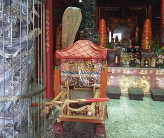 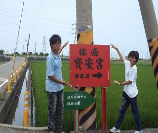
線西唯一的媽祖廟「寶安宮」，不是「保安宮」，主神：「天上聖母」，農曆3月23日聖誕千秋，
會辦法會、平安餐等等。主任委員：施復興
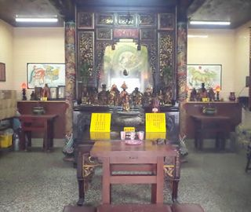 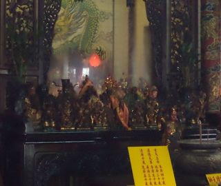
「塭仙宮」主神:「道德天尊」(老仙公)、「清府王爺」、「玄天上帝」，清府王爺在台灣為少數。
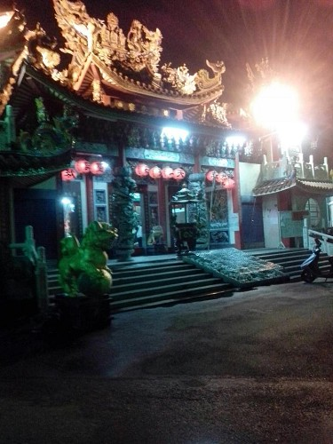
這是寶安宮晚上的夜景。
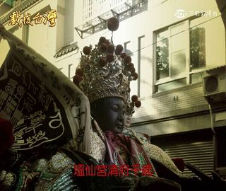 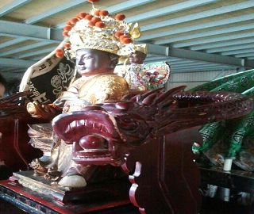
這是輕府王爺年輕版。
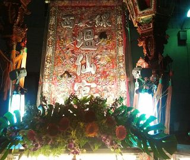 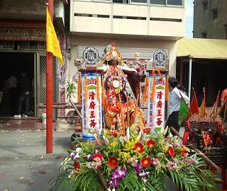
塭仙宮武轎班出去進香的陣頭。
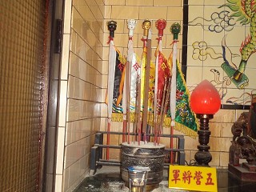 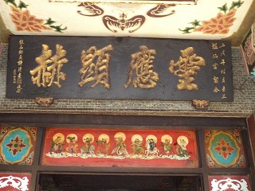
聽村長說：五營將軍託夢給村長說要換旗子，因為入火安座到上個月都沒有換想換新的；
這一塊扁是入火安座鄉長許清圭敬獻。
<--回塭仔村首頁
|